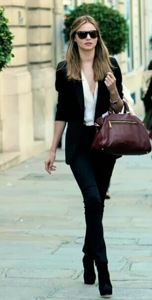
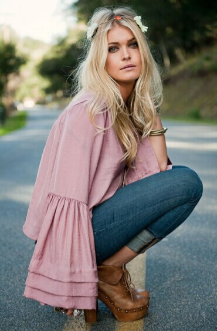

Fashion
Fashion design is the art of application of design and aesthetics or natural beauty to clothing and accessories. Fashion design is influenced by cultural and social attitudes, and has varied over time and place. Fashion designers work in a number of ways in designing clothing and accessories such as bracelets and necklace. Because of the time required to bring a garment onto the market, designers must at times anticipate changes to consumer tastes
Fashion style
{kind=link}
BOHEMIAN style is characterized with artistic interests. The Bohemian style focuses on some exotic patterns and textures. The free-spirited Bohemian draws inspirations from the gypsy look with their intricate patterns, peasant blouses, multiple chains, head scarves, and also hippy ponchos and tie dye jeans. Bohemian is well known for features that are considered non-traditional in appearance.
"CHIC" is often synonymous with "trendy" or "fashionable". People who favor this style prefer classic and stylish designs that are striking and smart.Chic style means having clothes that have strong colors but not garish.
{kind=link}

CLASSIC style may express comfort, but actually it focuses more on quality and popular styles such as white button-down blouses, ballet flats, a wide-legged trouser and leather boots.It focuses on clean uncluttered lines and formal balance, which expresses a sense of stability.
GLAMOROUS style shows a dazzling look accompanied with refined drama. But it also has a subtle allure, which can be between dramatic style and sexy style. The clothes often get everyone’s attention. A glamorous style is never complete without diamonds, silk and satin.
{kind=link}

{kind=link}
ROMANTICS are often called as hopeless or even incurable, but in reality, she is not looking for romance but is hoping for romance. A romantic is idealistic and often unrealistic. The apparel often includes flowers, hearts, ruffles, flouncing, soft fabrics which have gentle curve lines and accessorizes with lockets and cameos.
Western fashion style features the cowboy themes of the American Southwest and West. The western fashion is great for those who work or live on a ranch, participate in a rodeo or those who wish they live that kind of life.Western wear can be very informal, such as blue jeans, t-shirt, denim jacket, fringe jacket, cowboy hat, leather belt, and cowboy boots, etc.
{kind=link}
{kind=link}
Traditional fashion style shows the wholesome and sensible “girl next door”. These people' characteristics are practical, polite and always dress appropriately. Their styles are classic since most of the apparels are time-honored favorites. A girl with this style often wear a plaid flannel shirt or pea coat. She also prefers the classic black dress as long as it suits the occasion.
Preppy style is very popular among college students. This style is often girly but not too much frilly. The clothes are great to mix and match. In most of the time, the style may appear luxurious but actually people with this style do not drop ton of cash to have the look. The apparel often includes opaque tights, A-line skirts, girly blouses and headbands, etc. Punk style had started after the World War II but it became popular in the 1970’s. It had gone through different modifications and style twists but the main goal of punk style is to be anti-materialistic and edgy. Glam punk has bright colors, leather, spandex and leopard print while pop punk may have skinny jeans, band tees, skater styles and wrist bands. Tomboy style is for a girl who wants to wear something simple and who doesn't like to wear pink. Tomboy style focuses on graphic tees and distressed shirts from the boy section of department stores. This apparel is a bit baggy but it is not a bad thing. Likewise, popular stores offer unisex clothes that can be worn by guys and gals.